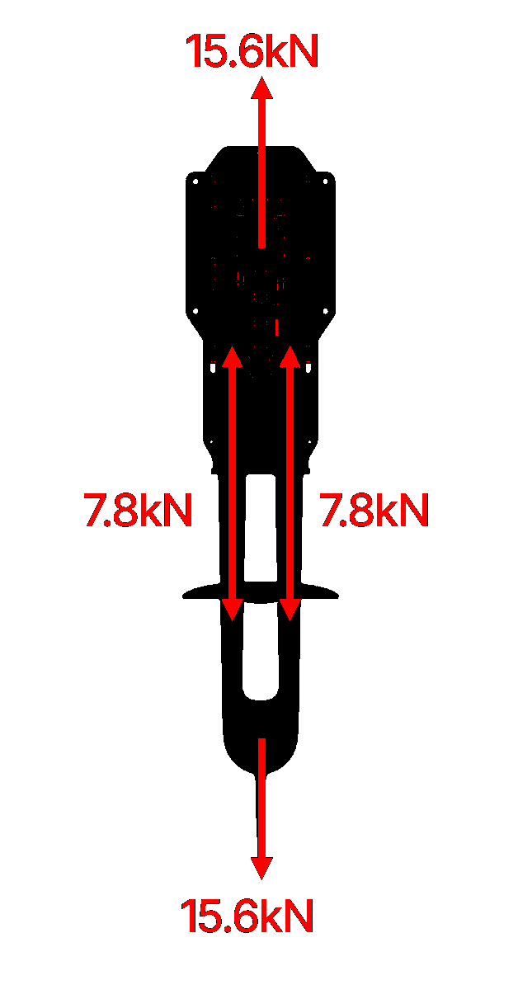
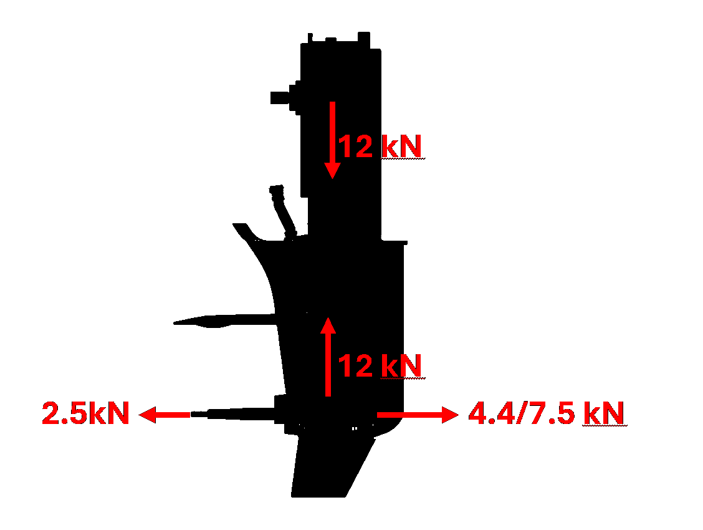
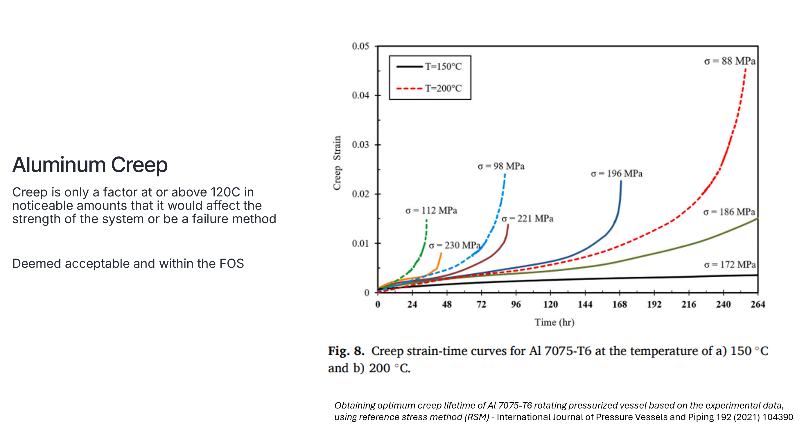

Case Study 02
Drivetrain Architecture & Power Increase
Redesigned drivetrain architecture from first principles by questioning inherited constraints, deleting unnecessary complexity, and simplifying load paths. Re-designed shafts to enable 11% reduction in cost while making assembly easier and reducing assembly failure rates and QC fails. Made modifications that will enable an approximately 18% increase in system power.
Short Summary
Redesigned drivetrain architecture from first principles by questioning inherited constraints, deleting unnecessary complexity, and simplifying load paths. Re-designed shafts to enable 11% reduction in cost while making assembly easier and reducing assembly failure rates and QC fails. Made modifications that will enable an approximately 18% increase in system power.
The Problem
The inherited drivetrain design reflected incremental decisions rather than first-principles optimization. It contained unnecessary complexity in load paths and assembly, limiting torque capacity and making power scaling inefficient.
Constraints
- Improve torque capacity without major tooling investment
- Maintain manufacturability and reasonable assembly flow
- Work through tolerance and interference risks across several connected parts
- Protect reliability while increasing system output
My Approach
- Challenged existing requirements and assumptions around load distribution and component necessity
- Deleted unnecessary parts and simplified interfaces to create more direct load paths
- Redesigned shafts, bearings, and belt-drive interfaces around actual load cases and safety factors
- Evaluated tolerance stackups and interference fits affecting robustness
- Paired mechanical changes with cost and manufacturing review
What I Built
- Reworked drivetrain architecture to change bearing cooling and deleted parts to simplify
- Updated component interfaces to improve manufacturability and quality control
- Established a more robust foundation for higher-power system operation
Results
- Enabled what will be an 18% increase in system power
- Improved system robustness and assembly quality through DFM
- Better alignment between safety factors and actual operating loads
- Reduced shaft-system cost by approximately 11% prior to power increase
What Went Wrong / Iterations
Changes in one part of the drivetrain exposed new constraints in packaging and assembly sequencing. Iteration was required to balance performance, manufacturability, and cost rather than optimizing any single variable in isolation.
What I'd Do Next
Next steps would include expanded durability testing and tighter correlation between analysis, tolerance behavior, and real assembly variation to support production confidence.
Images






Confidentiality Note
Details and visuals have been simplified to respect confidentiality while preserving the technical approach.